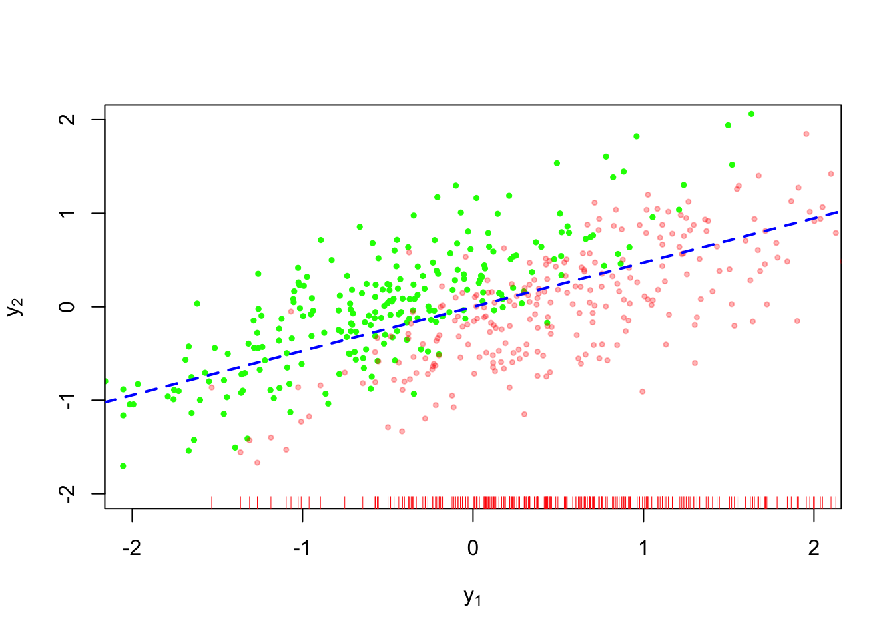
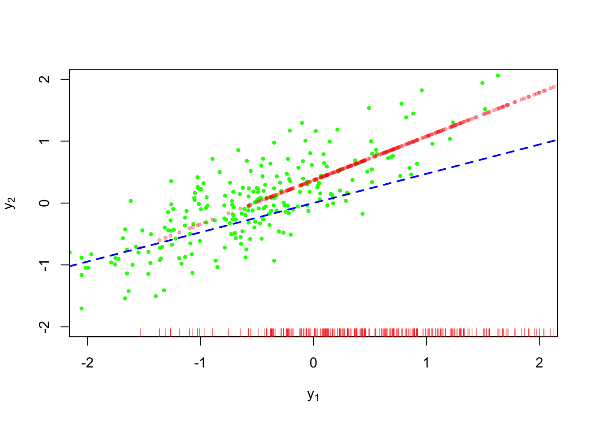
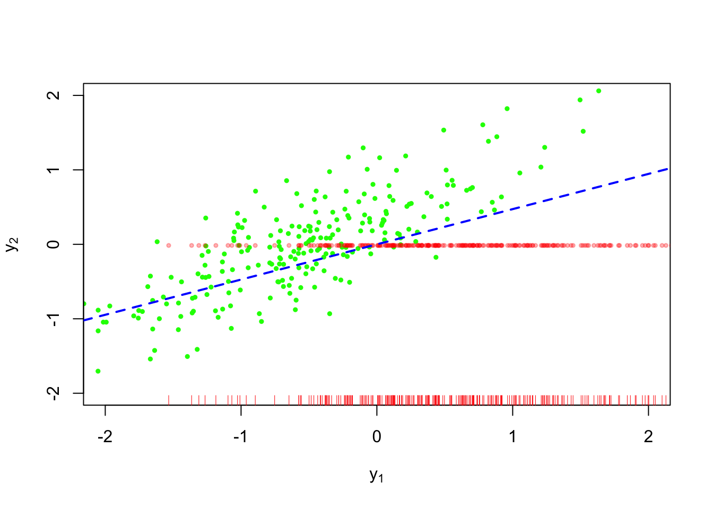
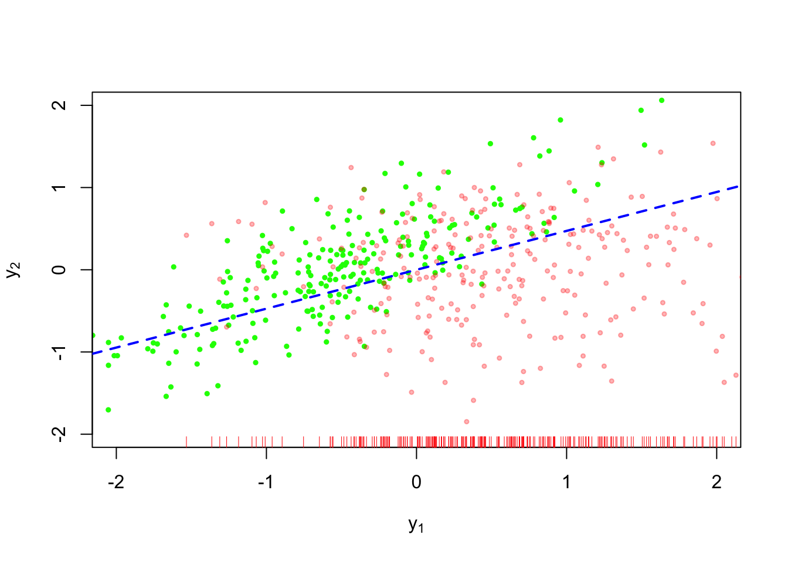
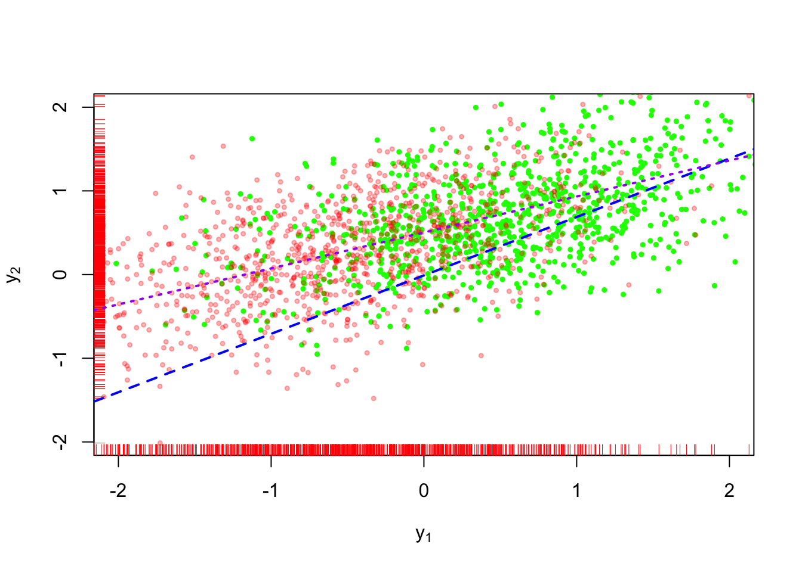
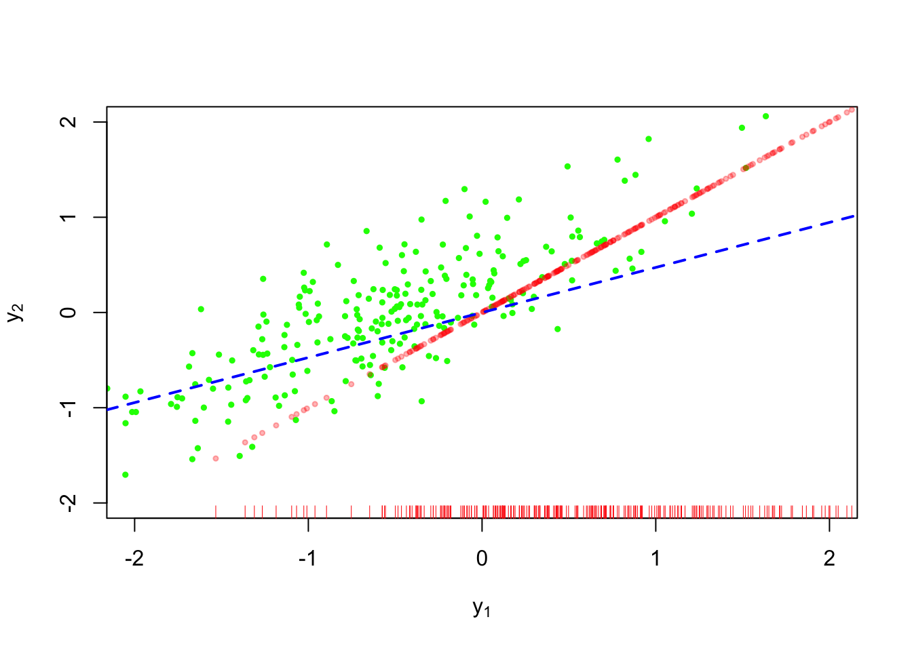

Missing data lecture 3
Imputation
It makes a good bit of sense to fill in missing values with some sort of estimate of the missing values. There are myriad ways to fill in unknown values with imputations.
The first way to fill in missing values we’ll cover are single imputation methods, whereby we fill in each missing value with one value. The values of the missing observations can be generated from an explicit model or an implicit model. We’ll demonstrate our methods on the following example dataset.
In the example shown in Figure 1, \(n=500\) values of \(Y_1, Y_2\) are a sample from a bivariate normal distribution; each random variable is marginally distributed as standard normal (i.e. mean \(0\) and variance equal to \(1\)), with covariance equal to \(\sqrt{0.5}\). The green values in Figure 1 are observed, while the red values are missing. Visually, we can see that the values are not missing completely at random because a preponderance of values are missing from the bottom left quadrant of the plot.
Single imputation methods are akin to poststratified estimators:
\[ \begin{aligned} \bar{y}^\mathrm{ps} & = \sum_{x \in \mathcal{X}} (\bar{y}_x^{\mathrm{res}} p_x + \mu(x, \hat{\gamma})(1 - p_x)) \frac{N_x}{N} \end{aligned} \] The estimator \(\bar{y}^{\mathrm{ps}}\) replaces all responses within a certain value of \(x\) that are unobserved with \(\mu(x,\hat{\gamma})\).
This seems like a good approach at first because we’re taking into account the model for \(Y_i \mid X_i = x\) when doing our imputation. The downside is that we’re understating uncertainty in our resulting estimator because all values lie exactly on the regression function.
Figure 2 shows conditional mean imputation applied to the dataset above. The bright red dots are imputed data.

The imputations don’t fit with the rest of the points because they lie directly on the regression line.
There are other even simpler approaches to imputation.
Mean imputation
There is mean imputation, whereby we impute each missing observation with the overall mean of the dataset:
\[ \begin{aligned} \bar{y}^\mathrm{mean} & = \sum_{x \in \mathcal{X}} (\bar{y}_x^{\mathrm{res}} p_x + \bar{y}^\mathrm{res} (1 - p_x)) \frac{n_x}{n} \end{aligned} \]
This technique seems sketchy because if \(Y_i\) depends on \(X_i\) then we’ll incur some bias by ignoring this relationship. Furthermore, we’ll ignore the added uncertainty by the fact that we’ve used \(\bar{y}\) for every missing response in the dataset.

Figure 3 shows this technique applied to our example. This is worse than the conditional mean imputation because we are ignoring the relationship between \(Y_1\) and \(Y_2\).
Random imputation
\[ \begin{aligned} \bar{y}^\mathrm{mean} & = \sum_{x \in \mathcal{X}} (\bar{y}_x^{\mathrm{res}} p_x + \tilde{y}^\mathrm{res} (1 - p_x)) \frac{n_x}{n} \\ \tilde{y}^\mathrm{res} & \sim \text{Normal}(\bar{y}^\mathrm{res}, \frac{\hat{\sigma}^2_{\mathrm{res}}}{r_x}) \end{aligned} \]
This is a better approach than mean imputation, but we’ll still be ignoring the relationship between the covariates and our response.

Random regression imputation
The most faithful single imputation method might be something like the following:
\[ \begin{aligned} \bar{y}^\mathrm{mean} & = \sum_{x \in \mathcal{X}} (\bar{y}_x^{\mathrm{res}} p_x + \tilde{y}_x (1 - p_x)) \frac{n_x}{n} \\ \tilde{y}_x \mid x & \overset{\text{indy}}{\sim} \text{Normal}\lp\mu(x, \hat{\gamma}), \frac{\hat{\sigma}^2_{\mathrm{res}}(x)}{r_x}\rp \end{aligned} \]
This approach is shown in Figure 5. The purple short-dashed line is the regression obtained from the completed dataset. We can see that despite the added uncertainty in the imputation method, the resulting complete-data estimator is still biased compared to the true relationship. We’ll still be ignoring the uncertainty that arises from the fact that we could have generated many different values for \(\tilde{y}_x\) versus the values that we used for the estimator.

Implicit imputation models
There are still more single imputation models.
Last-observation-carried-forward imputation (LOCF)
Suppose we consider \(Y_1\) the value of the first measurement in a longitudinal study with \(2\) measurement occasions. A popular method of single imputation in longitudinal analyses is last-observation-carried-forward, or LOCF for short. This is shown below:

We have the same problem with conditional mean imputation, namely the lack of randomness in our imputations.
Hot deck imputation
Hot deck imputation is something that is employed by the Census Bureau to handle item nonresponse on surveys. The simplest implementation is described as follows. Let there be \(n\) observations on \(y_i\), a univariate measurement, of which \(n-r\) are missing. The hot deck estimator is defined as follows: \[ \begin{aligned} \bar{y}^{\mathrm{HD}} & = \frac{1}{n} \lp r \bar{y}_{(0)} + (n-r) \bar{y}_{(1)} \rp \\ \bar{y}_{(1)} \mid y_{(0)} & = \frac{1}{n-r}\sum_{i=1}^r h_i y_{(0)i} \\ (H_1, \dots, H_r) & \sim \text{Multinomial}((n-r) \mid (1/r, \dots, 1/r)) \end{aligned} \] The units included in the fully observed data are called “donor” units because the set provides the values that can replace the missing values.
We can get the mean and variance of these estimators by using the law of total expectation and total variance:
\[ \begin{aligned} \Exp{\bar{y}^{\mathrm{HD}}} & = \ExpA{\ExpA{\bar{y}^{\mathrm{HD}}}{(H_1, \dots, H_r) \mid Y_{(0)}}}{Y_{(0)}} \\ \Var{\bar{y}^{\mathrm{HD}}} & = \VarA{\ExpA{\bar{y}^{\mathrm{HD}}}{(H_1, \dots, H_r) \mid Y_{(0)}}}{Y_{(0)}} + \ExpA{\VarA{\bar{y}^{\mathrm{HD}}}{(H_1, \dots, H_r) \mid Y_{(0)}}}{Y_{(0)}} \end{aligned} \] Example 4.8 in Little and Rubin (2019) walks through the derivation of these expressions.
Hot deck with matching
Given that the prior example is only useful when data are MCAR (as our book mentions), one can modify the donor units for each observation such that we only choose donors from a pool that is “close” to the unit with a missing value in terms of other completely observed values. For a unit for which \(y_i\) is missing but for which we have fully observed covariates \(x_{i} = x_{i1}, \dots x_{iK}\), we would choose a donor unit with observed \(y_j\) and \(x_j = x_{j1}, \dots x_{jK}\) such that some distance metric, \(d(x_i, x_j)\) is below a threshold value, \(d_0\).
Predictive mean matching
In predictive mean matching, we fit a regression model on the completely observed units. Then we compute the predicted value for \(y_i\), or \(\hat{y}(x_i)\) using \(x_i\) and pick donors for which \((\hat{y}(x_i) - \hat{y}(x_j))^2\) are below \(d_0\).
Multiple imputation (MI)
As the above examples indicate, at a minimum, imputation methods need to at least provide for some randomness in order to fit in with the rest of the data. The problem with generating only one such set of data is that we ignore randomness that occurs from having chosen only one set of values for our missing observations. Ideally, we would generate many such complete datasets, say \(D\), and use this set of datasets to characterize the uncertainty in our imputations. This is the motivation for multiple imputation, or MI.
Suppose we have a way of generating \(D\) complete datasets. For each dataset \(d, d=1, \dots, D\) , we compute an estimator for some quantity of interest, or \(\hat{\theta}_d\). It could be a mean, \(\bar{y}\), or a regression coefficient, or the maximum eigenvalue of a covariance matrix. For simiplicity’s sake, consider the value to be univariate for the remainder of the section, but in 5.4 in Little and Rubin (2019), there is information on how to generlize to multivariate estimands. The estimate across \(D\) datasets is the sample average, or \(\bar{\theta}_D = \frac{1}{D} \sum_{d=1}^D \hat{\theta}_d\).
In order to get a valid variance estimate that includes variability from imputations as well as sampling uncertainty, we compute something akin to the total variance in the hot deck imputation approach to imputation. We first compute the variance within an imputation and then average across imputations to get the expected value of the within-imputation uncertainty. This would be like a standard error that is returned from a regression routine, or \(\sigma^2/n\) for the mean. \[ \bar{W}_D = \frac{1}{D} \sum_{d=1}^D \Var{\hat{\theta}_d} \]
We then need the between imputation variance, which is the variance of the point estimates returned from each imputation, of the form: \[ B_D = \frac{1}{D - 1} \sum_{d = 1}^D (\hat{\theta}_d - \bar{\theta}_D)^2 \]
Then the total variance is estimated to be: \[ T_D = \bar{W}_D + \frac{D + 1}{D} B_D \] The multiplier \(1 + D^{-1}\) is an improvement for the variance estimate to account for the fact that \(D\) is finite. The quantity \(\hat{\gamma}_D\), \[ \hat{\gamma}_D = \frac{D + 1}{D} B_D / T_D \] represents the loss of efficiency due to nonresponse.
References
Little, Roderick JA, and Donald B Rubin. 2019. Statistical Analysis with Missing Data. John Wiley & Sons.